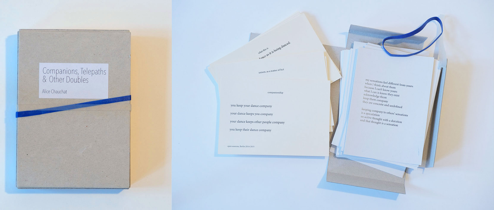

Companions, Telepaths & Other Doubles 
Samizdat, 2015 Over the years 2014-2015, beside my usual engagement in workshops and collective research contexts, I established a regular studio practice in Berlin, inviting colleagues and friends for daily sessions over the fall and spring. This allowed me to develop and practice dances as studies in being together, testing the sensation of unbridgeable alterity and unconditional commitment to a co-presence that cannot be evaluated or verified. The publication “Companions, Telepaths & Other Doubles” contains two decks of cards: one is composed of 14 brief scores I've been using and developing over (mostly) these two years*. The other deck gathers my notes – 50 poems written as I was creating and practicing these scores over a six months period. Two scores and the poems appear in my piece Togethering, a Group Solo. A selection of scores and poems, translated into Spanish by Diego Agulló, were published in Cuerpo de Letra's current edition (eds. Diego Agulló and Victoria Perez Royo). * Two of these scores I retrieved from Jennifer Lacey's work, one was an idea emitted by Raimundas Malašauskas, two were developed during a workshop in Vienna by participants Doug LeCours & Sara Gibbons and Arielle Solomon & Angela Kockers. |